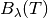
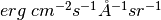

blackbody_lambda¶
-
astropy.analytic_functions.blackbody.blackbody_lambda(in_x, temperature)[source] [edit on github]¶ Deprecated since version 2.0: The blackbody_lambda function is deprecated and may be removed in a future version. Use astropy.modeling.blackbody.blackbody_lambda instead.
Like
blackbody_nu()but for .Parameters: in_x : number, array-like, or
QuantityFrequency, wavelength, or wave number. If not a Quantity, it is assumed to be in Angstrom.
- temperature : number, array-like, or
Quantity Blackbody temperature. If not a Quantity, it is assumed to be in Kelvin.
Returns: flux :
QuantityBlackbody monochromatic flux in .
- temperature : number, array-like, or